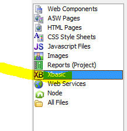

Alpha Anywhere allows you to create REST APIs. This allows other programs to call functions that you have written in Alpha Anywhere.
For example, you may have written some code in an Alpha Anywhere application to create a new reservation. Typically, you will have some type of user interface (for example a UX component that gathers information required for the new reservation), that exposes this functionality. Your component could have a "Create Reservation" button. Behind the scenes, your application probably does a lot of work when a user creates a new reservation. It might check one table for availability, and then write data to one or more other tables. Finally, it might send a confirmation email to the user who made the reservation.
Say now, you want to allow another application (written in PHP, Node, or any other system, including Alpha Anywhere) to create a reservation in your application. This other application will be creating the new reservation programmatically, without going through the user interface you have designed.
In order to expose the ability to create a new reservation to these external programs, you could create a REST API that these external programs could call to perform the task of creating a new reservation.
In general terms, when you create an API in Alpha Anywhere you typically start by defining an Xbasic class, (or a Node.JS API). The Xbasic class will define one or more methods. Then you create a REST Service (using the REST Service builder in Alpha Anywhere, described below) and you specify which of the methods in the Xbasic class you want to expose in your REST API.
When you define the REST Service you specify how each method in your class should be called. For example, you can specify if a GET, POST, UPDATE, DELETE or PUT request should be made to call a particular method that you have chosen to expose. You can also specify how the REST API will pass parameters to your method. For example, the parameters can be passed in the request header, in the request URL, in the request query string, or in the request body.
Another way to create a REST API is to start with a Swagger definition of the API. Swagger is an industry standard method for describing a REST API. Alpha Anywhere can import a Swagger definition and then create a stub Xbasic class (or Node API). You can then edit the stub Xbasic class (or Node API) and fill in the code for each of the methods in the class.
When you create a REST API in Alpha Anywhere you can automatically generate a Swagger definition of your API, you can generate documentation for your API and you can test your API.
| Creating a REST API | Creating a simple REST API |
You can create REST APIs in Alpha Anywhere to expose functionality defined in an Xbasic class or a Node API.
In this video we show how a simple API is defined. Watch Video Date added: 2018-04-06 |
| Creating a REST API | Passing parameters to a method |
In the previous video we showed how to expose a very simple method in a REST API. The method did not take any arguments.
Typically most of the methods you expose in your API will take arguments. These arguments can be supplied
to the method being called in various ways (as part of the request URL, in query parameters, in the request
header, or in a POST body).
In this video we show how a method that takes a single parameter can be exposed in a REST API. Watch Video Date added: 2018-04-06 |
| Creating a REST API | Authenticating a method in a REST API |
When you create a REST API that exposes one or more methods, you might want to require that some (or all) of the methods
exposed by the API should require some type of authentication before the call can be made.
In this video we show how to require authentication for certain methods in your API. Watch Video Date added: 2018-04-06 |
| Creating a REST API | Auditing an API |
You can use the audit feature when you create a REST API to keep track information such as how often a particular endpoint
is called, how long each method takes to execute. You might want this information so you can implement some
type of rate limiting for you API to ensure that it is not being abused.
In this video we show how you can define methods to audit the use of your API. Watch Video Date added: 2018-04-06 |
| Creating a REST API | Defining the Encoding for the Body Data |
A common use case for an API is to create a new record in a database or to update an existing record in a database. In these
cases, the request will typically be a POST and the data for the new or updated record will be in the request
body. The data in the body can either be FORM or JSON encoded.
Watch Video In this video we will show the difference between FORM and JSON encoding the body data. Date added: 2018-04-06 |
| Creating a REST API | Returning Complex JSON Data |
In this video we show how to create a REST API that returns complex JSON data for a customer. The API will return data about
a particular customer, including all of the orders placed by that customer, and for each order, all of the
line items in that order. The data will come from querying the sample Northwind database. The video shows
an example of the type of complex data that a REST API is often designed to return.
Watch Video Download files Date added: 2018-04-06 |
| Creating a REST API | Importing a Swagger Definition |
When you create a REST API you can either start by defining an Xbasic Class that defines the methods you want to expose in
your API, or you can start by importing a Swagger definition for the API. Swagger is an open source standard
for describing REST APIs. When you import a Swagger API definition, Alpha Anywhere will create a stub Xbasic
class that you can then edit.
In this video we show how you can import a Swagger definition. Watch Video Date added: 2018-04-06 |
In this section we will describe how to create a new REST API starting with a very simple Xbasic class that defines the functionality we want to expose via a REST API.
Create an Xbasic Class
Your REST API exposes functionality defined by methods in an Xbasic class (it can also expose functionality defined by methods in a Node API).
To create a new Xbasic class, select the Xbasic category in the Web Projects Control Panel.

Then click the New button.
A dialog will appear asking what type of Xbasic file you want to create. Select the Create a new Xbasic Class button.
This will open the Xbasic Class Editor where you can define the methods that you want to expose in your REST API.
We will define a very simple class with just a single method:
define class REST::myRestAPI
function getData as p ()
dim p as p
p.firstname = "Fred"
p.lastname = "Jones"
p.address = "123 Main Street"
p.city = "Boston"
p.state = "MA"
getData = p
end function
end class
The method, getData, returns an Xbasic dot variable (i.e. an object) with some properties.
TIP: When creating a new class in the Xbasic Class Editor, you can click on the
Insert...
button in the toolbar to add sample code for a new Class definition.
Now, lets expose this method via a REST API.
Back at the Web Control Panel, select the Web Services category, then click the New button in the top left of the screen.
A dialog will appear prompting for the type of Web Service you want to create or consume.
Click the Create a new definition to create a REST service button.
This will open the REST API Service Builder.
You use this dialog to select the Xbasic class (or Node API) whose methods you want to expose in the REST API and then to define the properties of each exposed method.
Lets assume you want to expose the getData() method you defined when you created the REST::myRestAPI class.
Click the Add new class button and select the Xbasic class or Node API you want to use.
NOTE: You can select multiple classes to expose methods from different classes.
After you select the class, the API Service Builder dialog will show all of the methods in the selected classes. Since the class we defined only has a single method ( getData), only one method shown in the dialog:
Your REST API does not have to expose every method defined in the selected classes. You can select which of the defined methods to expose.
In the above image, the red icon to the left of the getData method indicates that this method is not yet exposed in the REST service.
To expose a method in the REST service, click the Edit Method Properties button.
This will bring up a dialog where you can define the properties for the method.
Click the checkbox for the Expose method in service prompt and the dialog will display the settings for the method.
First you will need to select the REST verb. This specifies the type of request that must be made to call the REST endpoint that we are defining for the getData method.
The possible verbs are: GET, POST, DELETE, UPDATE, PUT.
Typically you will select the GET verb when you are defining a REST endpoint that performs some type of query that returns data and you will select the POST verb when you are defining a REST endpoint that does some type of CRUD operation (e.g. create a new order, update customer information, etc.).
Next, you need to specify the Path for the endpoint. The path always has the method name in it and optionally some or all of the method arguments.
In this case, the getData method does not have any arguments so we will not need to specify how the REST endpoint will provide the arguments to the Xbasic method (i.e. will the arguments be provided in the query string, the request URL, the request body, or in the request header, etc.).
In the above screenshot, the path for the getData method that we are exposing is defined as /getData.
Therefore the fully qualified URL for this endpoint will be something like this:
http://www.myappcom/name_of_service/getData
The path ( /getData) is appended to the service address ( http://www.myappcom/name_of_service). The service address will depend on where your web project is published.
In the previous walk through we exposed a simple method - getData - (that did not take any arguments) in a REST API.
Here is an example of a slightly more complex method ( getCustomer) that takes a single argument - customerId.
define class REST::myRestAPI
function getData as p ()
dim p as p
p.firstname = "Fred"
p.lastname = "Jones"
p.address = "123 Main Street"
p.city = "Boston"
p.state = "MA"
getData = p
end function
function getCustomer as p (customerId as c )
'do query for customer
'return an object with customer properties
'in a real application you code would perform a query to find
'the requested data, but to keep things simple
'we are returning static data
dim p as p
p.customerName = "Alpha Software"
p.address = "70 Blanchard Rd."
p.city = "Burlington"
p.state = "MA"
p.country = "USA"
'return the customer object
getCustomer = p
end function
end class
In most cases, the methods you choose to expose in your APIs will take arguments and you will need to define how these arguments are passed to the method being called when the API endpoint is invoked.
There are several different ways in which an API call can define argument values. For example:
In the case of API calls that use a body you can choose whether arguments not encoded in the path or header should be encoded in the query string or in the body. You cannot specify that some arguments should be in the query string and others should be in the body.
NOTE: The only exception is when you have binary arguments, and you have selected the multipart option for the binary data. In this case the binary data is always passed in the body even if the other arguments are passed in the query string.
The Arguments prompt on the API Service Builder dialog allows you to specify whether arguments will be in the Body or the QueryString.
If you specify that argument are in the Body, the Body Encoding prompt is shown. The options for this prompt are:
If you select the FORM encoded option, then the data in body should be in the form of one or more name/value pairs, delimited with the & character. For example:
name=Fred&city=Boston&country=USA
If you select the JSON encoded option, the data in body should be a string in JSON format. For example:
{"name": "Fred", "city" : "Boston", "country" : "USA", "standing" : "excellent"}
If you select the JSON encoded option, and if there is only a single argument being passed in the request body, the API Service Builder dialog will show the Has single argument in Body prompt:
If you check this property, then when you supply the body data you will not need to specify the argument name in addition to its value. You can just supply the argument value.
The method being called might be defined as follows:
function method1 as c (inputdata as c )
end function
In this case you will need to map the raw data in the BODY to the inputdata argument that the method takes.
When you select to expose a method in your API, the Method Properties screen will show if the method takes any arguments.
Each of the different ways in which the API call can pass data is discussed below.
If the method you are exposing has arguments, then the Method Properties dialog will allow you to define a custom header for the request. The custom header can be used to pass any of the argument values.
When you click the Build Header button you will get a dialog where you can specify the name of a header variable and the variable's value. The value can be one of the method's arguments. In this image shown below, the method has an argument called apiKey and the header has a variable called apikey which is mapped to this argument.
You can pass argument values in the URL. For example, consider a method called getCustomer method. This method takes a single argument, the customerId
In order to pass the customerId argument as part of the URL, click the Edit Path button, to open the Edit Path dialog. Then click the Insert argument hyperlink and select the customerId argument to insert it into the URL, as shown below.
When you close the Edit Path dialog, the Method Properties dialog will show the Path as follows:
The Allow blank values for parameters in the URL property allows you to specify that if a request is made to this endpoint:
http://www.myapi.com/myService.a5svc/getCustomer
This request will call the getCustomer method and pass in a blank value for the customerId argument.
If the Allow blank values for parameters in the URL property is not checked, then a request to this endpoint:
http://www.myapi.com/myService.a5svc/getCustomer
will not be interpreted as a match to any of the defined endpoints and the getCustomer method will not get called.
In the case of a GET request, any arguments not passed in the URL are automatically passed in the Query String . There is no need to actually specify that an argument will be passed in the Query String. It is implied, because all arguments not supplied in the URL are automatically assumed to be passed in the Query String .
In the case of a POST request, any arguments not passed in the URL can either be passed in the Query String or in the request Body. The API Service Builder dialog will allow you to specify if arguments not passed in the URL should be in the Query String or in the Body.
For arguments in the Body, you can specify the encoding - either FORM or JSON.
In some cases the argument names in data passed by the request will not exactly match the argument names defined in a method.
For example, you cannot defined an Xbasic variable called first-name ( first_name, however, is legal). So, if your API passes some data in which an argument name is called first-name, you will need to map this argument to the name of the argument used in the method definition.
In order to map argument names, check the Has argument mapping? property on the Method Properties dialog. Then click the Map Argument Names button.
When you define the methods in an Xbasic class, each method you define can take arguments of various types (e.g. character, numeric, logical, time, etc. ) and also property (i.e. type of "P"). Methods can also return data that is a property variable. For example:
define class REST::myRestAPI
function createNewCustomer as p (newCustomer as p)
dim Name as c = newCustomer.Name
dim Address as c = newCustomer.Address
dim City as c = newCustomer.City
....
end function
end class
In the above definition the structure of the newCustomer object that is passed as an argument to the method is not defined.
When you define the class you can, however, also define the structure of the newCustomer object. For example:
define class REST::myRestAPI
function createNewCustomer as p (newCustomer as REST::myRestAPI::newCustomer)
dim Name as c = newCustomer.Name
dim Address as c = newCustomer.Address
dim City as c = newCustomer.City
....
end function
end class
define class REST::myRestAPI::newCustomer
dim Name as c
dim Address as c
dim City as c
end class
Note that the newCustomer argument (which was previously defined as being of type P) is now defined as being of type REST::myRestAPI::newCustomer.
The REST::myRestAPI::newCustomer class is referred to as the " model" for the newCustomer object.
Notice the special naming convention used for the model. The class name starts with the name of the class in which the method is defined (i.e. REST::myRestAPI) and then has the argument name ( newCustomer)
Models can be defined recursively. For example, in the code below, notice that in the definition of the newCustomer model, the Address is defined using a model for the Address property.
define class REST::myRestAPI
function createNewCustomer as p (newCustomer as REST::myRestAPI::newCustomer)
dim Name as c = newCustomer.Name
dim Address as c = newCustomer.Address
dim City as c = newCustomer.City
....
end function
end class
define class REST::myRestAPI::newCustomer
dim Name as c
dim Address as REST::myRestAPI::Address
dim City as c
end class
define class REST::myRestAPI::Address
dim StreeNumber as n
dim Street as c
end class
If you define a method argument using a model for the argument, when you open the API tester to test your API, you will notice that the tester will show the structure of the argument.
As previously mentioned, the return value of a method can also be set to an object defined by a model. The main benefit of using a model to define the return value of a method is when you generate a client SDK for your API. The generated code for the SDK will define classes for the method's return value. See " Generating a Client SDK" below for more information.
When you define a REST API you can specify if any of the methods exposed in the API should be authenticated. You can choose to require authentication for some of the methods you expose, while other methods may not require any authentication.
In order to define authentication for any method exposed in an API you must first turn authentication on by checking the Require authentication for selected methods property on the main dialog where the REST API is defined (the Service Builder dialog).
Once you have checked this property, the Define Authentication Methods button is shown.
Click this button to open the Authentication Methods builder. This builder (shown in the image below) allows you to define one or more named Authentication Methods. Each named Authentication Method defines several properties that include:
Once you have defined one or more Authentication Methods (as described above), you can edit the properties of individual methods that you have exposed in your API definition and turn on authentication for that method.
To turn authentication on for a particular method that your API is exposing, edit the properties for that method and then check the Authenticated? checkbox. A prompt for the Authentication name will be shown where you select one of the named Authentication Methods you previously defined.
You can audit the use of an API. For example, you might want to keep track of how many times an API endpoint has been called. Or how many times an API endpoint has been called using a certain API key so that you can implement some type of rate limiting logic. You might also want to keep track of how long a particular API endpoint takes to respond.
In order to do any of the above, you will need to turn on auditing for your API.
To turn on auditing, check the Audit the API box in the Service Builder dialog.

This will reveal a button that you can click to define the audit methods.
When you click the Define Audit Method button, the Audit Method dialog is shown (see image below).
This dialog allows you to specify the name of an Xbasic class (or Node API) that defines two specially named methods:
The BeginAudit method is called before any method is executed. The EndAudit method is called after the method that is being called by the API endpoint has completed execution.
Both methods take as their only argument a special system object, helper::ServiceRestAudit. This object has several properties, including methodName (the name of the API method being called), milliseconds (the time it took for the method to execute) and headers (the request header).
Here is a sample showing how the EndAudit method might be defined to keep track of how long a method took to execute.
define class restAudit::auditor
function EndAudit as v(arg as helper::ServiceRestAudit)
dim txt as c
txt = arg.MethodName + " took " + arg.milliseconds
txt = txt + " milliseconds"
file.append("c:\data\rest.log" , txt +crlf())
end function
end class
You can specify the HTTP status code that each method in your API returns.
For example, consider an API that exposes methods in the Xbasic class definition shown below:
define class REST::myRestAPI
dim __http_status as n
function getData as p ()
dim p as p
p.firstname = "Fred"
p.lastname = "Jones"
p.address = "123 Main Street"
p.city = "Boston"
p.state = "MA"
getData = p
self.__http_status = 200
end function
function getCustomer as p (customerId as c)
dim cn as sql::Connection
dim flag as l
flag = cn.open("::Name::northwind")
dim args as sql::arguments
args.add("customerId",customerId)
dim sql as c
sql = "select * from customers where customerId = :customerId"
flag = cn.Execute(sql,args)
dim json as c
json = cn.ResultSet.toJSON()
dim p as p
p = json_parse(json)
getCustomer = p[1]
if p.size() >=1 then
self.__http_status = 201
else
self.__http_status = 406
end if
end function
end class
Each method in the class can set the value of the __http_status variable to any value.
In order to set the value of the __http_status variable, the self prefix is used for the variable.
For example
self.__http_status = 200
IMPORTANT: Note that this __http_status variable is DIMMed as a numeric at the top of the class definition.
Just as you can test a UX or Grid component while you are designing the component in the builder by clicking on the Live Preview tab in the builder, you can test your API from within the Service Builder dialog.
At any time while you are defining your API you can click on the Live Test the API button in the bottom, left corner of the dialog.
If the development server is not already running, Alpha Anywhere will prompt to start the Development Server, and then once the Development server is running, it will open the browser with a page showing all of the methods your API exposes. You can click on the button to the left of the API endpoint to test a particular method
After you have tested a method, the response from the server will be shown. The response will include the HTTP Status code set by your code in the method definition and it will also show the CURL command that an external program could use to make a call to your API.
Just as you can get access to a page to test your API from within the Service Builder dialog, you can also get access to this same API test page in a published Application.
For example, assume that you have published your Application to this address:
http://www.myapp.com
The URL to bring up the API tester will be
http://www.myapp.com/__a5_system/swagger/index.html
When you navigate to this address you will see a list of all of the REST API services that you have published:
Select the service you want to test and then continue selecting the method within the selected service.
At any time while you are defining your API you can click on the API Documentation button the API button in the bottom, left corner of the dialog to generate documentation for your API
In a published application you can link to the API documentation using an address like this
<address where your app was published>/swagger/<serviceName>.html
For example, if you published your App to http://www.myapp.com and the name of your REST API service is myrestservice1 then URL for API documentation will be
http://www.myapp.com/swagger/myrestservice1.html
Swagger (now called OpenAPI) is a open source standard for describing a REST API. When you design an API in the Service Builder (as described in the above tutorial) you can also generate a Swagger definition of your API.
To generate a Swagger definition, click the Swagger definition button in the lower left corner of the Service Builder dialog.
When you create a new REST API you typically start with a Xbasic class or Node API that implements some functionality (i.e. methods) and then you define a REST API to expose one or more methods in selected Xbasic classes and/or Node APIs.
However, this is not the only way in which you can go about building a REST API.
Another, equally valid way is to start with the Swagger definition of the API you want to build, and then import the Swagger definition into the Service Builder by clicking on the Import From Swagger button at the bottom left of the Service Builder dialog.
When you click the Import Form Swagger button, a new dialog is opened where you can paste in your Swagger definition.
At the bottom of the screen you will see a radio button where you can indicate if you want to generate the stub implementation code as an Xbasic class or a Node API.
You can also click the Import Sample Swagger... hyperlink to import a sample Swagger definition taken from the Swagger web site.
After you paste in the Swagger definition and you click the Import button, the stub Xbasic class or Node API will be created. You can then edit the stub file that was created and specify the actual code needed to implement the methods defined in the class.
A client SDK allows your API to be called from different clients - such as a C++ program, a Node.JS program, a C# program, Java program etc. Or, even directly from the browser (this would be a Javascript client).
If you have a have a Swagger definition of your API (easy to do, since the Service Builder dialog has a button to generate a Swagger definition), you can automatically generate Client SDKs in various flavors using the free Swagger service at:
You then paste in the Swagger definition of your API and then select the Generate Client menu on the toolbar.